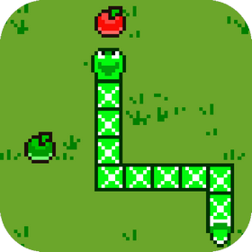
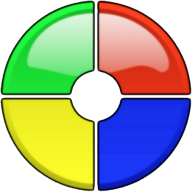

Каталог игр
-
 Играть
ИгратьИгра "Крестики-нолики" (Tic-Tac-Toe)
"Крестики-нолики" - это простая настольная игра для двух угроков, которые ставят свои знаки на квадратном поле размером 3x3. Один игрок использует знак "X", а другой — "O". Цель игры — первым собрать три своих знака в ряд, что может быть сделано горизонтально, вертикально или по диагонали.
-

Играть
Игра "Змейка" (Snake)
"Змейка" — это классическая аркадная игра, в которой игрок управляет змейкой, которая растет по мере сбора пищи. Игра требует от игроков быстрой реакции, стратегического мышления и умения планировать свои действия, чтобы избежать столкновения с собственным хвостом, после которого игра запускается заново.
-
 Играть
ИгратьИгра "Пятнашки" (15 Puzzle)
"Пятнашки" — это классическая логическая головоломка, которая требует от игрока стратегического мышления и пространственного восприятия. Игра состоит из квадратной рамки, разделенной на 16 клеток, из которых 15 заполнены плитками с числами от 1 до 15, а одна клетка остается пустой. Цель игры — расположить плитки в правильном порядке, перемещая их в пустую клетку.
-
 Играть
ИгратьИгра "Концентрация" (Memory Game)
"Концентрация" — это увлекательная логическая игра, направленная на развитие памяти, внимания и концентрации. Основная цель игры заключается в том, чтобы найти все пары одинаковых карточек, открывая их по одной. Игроки должны запоминать расположение карточек, чтобы успешно находить соответствующие пары.
-
 Играть
ИгратьИгра "Тетрис" (Tetris)
"Тетрис" — это классическая аркадная головоломка, в которой игрок управляет падающими фигурами, называемыми тетромино, состоящими из четырех квадратных блоков. Цель игры в том, чтобы собирать горизонтальные линии из тетромино, которые исчезают после заполнения. Игра продолжается до тех пор, пока новые тетромино не могут поместиться в игровом поле, что приводит к окончанию игры.
-

Играть
Игра "Саймон" (Simon)
"Саймон" — это популярная и увлекательная игра на внимание и память. Основная цель игры заключается в том, чтобы повторить последовательность вспышек, заданную "Саймоном". Игра продолжается до тех пор, пока игрок не ошибется или не сможет воспроизвести последовательность.